Programación
Tema 5: Programación Orientada a Objetos
Índice
- Introducción
- Fundamentos de la POO
- Estructura de una clase
- Atributos
- Métodos
- Encapsulación, control de acceso y visibilidad
- Constructores
- Empaquetado de clases
- Arrays estáticos de objetos
- Tipos enumerados
Introducción
Programación tradicional: Problema cuando el software crece y es necesario reutilizar código.
Surge la POO: Técnica para solucionar un problema basándonos en modelos del mundo real con sus propiedades y acciones.
Índice
- Introducción
- Fundamentos de la POO
- Estructura de una clase
- Atributos
- Métodos
- Encapsulación, control de acceso y visibilidad
- Constructores
- Empaquetado de clases
- Arrays estáticos de objetos
- Tipos enumerados
Fundamentos de la POO
Programación Estructurada, se crean funciones y procedimientos que definen las acciones a realizar, y que posteriormente forman los programas.
Fundamentos de la POO
Programación Orientada a Objetos, considera los programas en términos de objetos y todo gira alrededor de ellos.
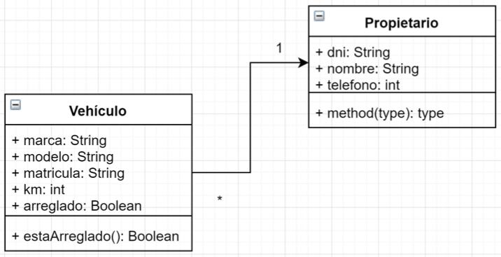
Fundamentos de la POO
Conceptos
- Se descompone la aplicación en objetos que son representaciones del mundo real.
- Más cercano a la forma humana de pensar.
- Los datos y funciones de los objetos no están accesibles al resto de objetos.
- Cualquier programa escrito en POO puede ser escrito en Programación Estructurada.
Fundamentos de la POO
Beneficios
- Comprensión
- Modularidad
- Mantenimiento
- Seguridad
- Reusabilidad
Fundamentos de la POO
Características
Abstracción
Consiste en centrarnos en el desarollo del objeto definiendo sus características y operaciones sin preocuparnos dónde será utilizado.
Reflejar entidades de la vida real mediante clases.
Ejemplo: Clase Vehículo (con sus propiedades como matrícula, marca, color...) es una abstracción de Coche y Camión.
Fundamentos de la POO
Características
Modularidad
Nuestro programa se descompone en clases en archivos independinetes.
Favorece la modificación y reutilizaciónn del código.
Fundamentos de la POO
Características
Encapsulación
Ocultamiento de información.
El programador decide qué partes (atributos y métodos) de la clase pueden ser accedidas desde el exterior.
Incrementa la seguridad.
Fundamentos de la POO
Características
Jerarquía
Relaciones entre clases.
- Generalización o especialización (herencia): Crea nueva clase a partir de otra. "Es un". Ej: Coche hereda de Vehículo.
- Agregación o inclusión: Agrupa objetos dentro de una clase. "Es parte de". Ej: Coche esta compuesta por Ruedas, Motor...
Fundamentos de la POO
Características
Polimorfismo
Capacidad de que varias clases, creadas a partir de una clase ancestra común, realicen una misma acción de forma diferente.
Ej: Triangulo, Cuadrado, Circulo heredan de Figura. El método "pintar" de Figura se haría de forma diferente en cada clase.
Fundamentos de la POO
Lenguajes POO
- Simula (1962)
- SmallTalk (1972)
- C++ (1985)
- Eiffel (1986)
- Java (1995)
- C# (2000)
Ranking lenguajes de programación
Índice
- Introducción
- Fundamentos de la POO
- Estructura de una clase
- Atributos
- Métodos
- Encapsulación, control de acceso y visibilidad
- Constructores
- Empaquetado de clases
- Arrays estáticos de objetos
- Tipos enumerados
Estructura de una clase
- Campos, atributos o propiedades: Parte de la clase que almacena los datos. Pueden ser de tipo primitivo u otro objeto.
- Métodos o funciones: Parte de la clase que realiza operaciones sobre los datos. Sólo se deben modificar los atributos a través de los métodos.
Estructura de una clase
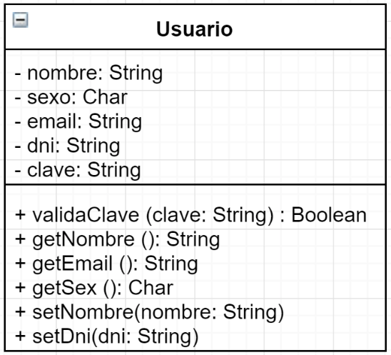
Estructura de una clase
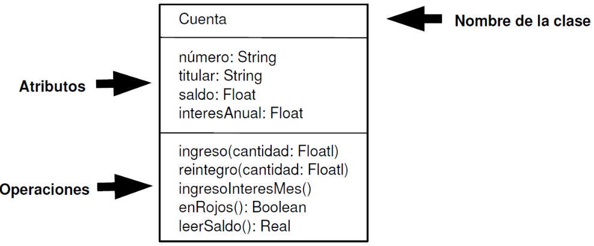
Estructura de una clase
Durante la ejecución de la aplicación se instanciarán (crearán) objetos reales con sus propios atributos.
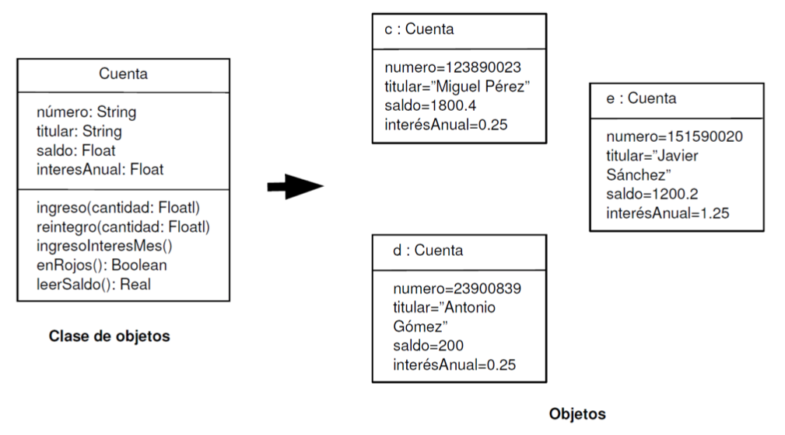
Estructura de una clase
Declaración de una clase
- Cabecera: Nombre, modificadores, herencia...
- Cuerpo: Atributos y métodos.
// Cabecera de la clase
[modificadores] class NombreClase [herencia] [interfaces] {
// Cuerpo de la clase
Declaración de los atributos
Declaración de los métodos
}
Estructura de una clase
Declaración de una clase
Ejemplo:
/**
* Ejemplo de clase Punto
*/
public class Punto {
// Atributos
int x, y;
// Métodos
int obtenerX(){ return x; }
int obtenerY(){ return y; }
void establecerX(int vx){ x = vx; };
void establecerY(int vy){ y = vy; };
}
Estructura de una clase
Declaración de una clase
- Primera letra de la clase en mayúsculas: Punto
- Si esta formada por varias palabras, el inicio de cada una en mayúsculas: PuntoEspecial
- Nombre del archivo igual que la clase: PuntoEspecial.java
- Definición e implementación en el mismo archivo. No ocurre como en C++ (archivos .h y .cpp).
Estructura de una clase
Cabecera: Modificadores
// Cabecera de la clase
[modificadores] class NombreClase [herencia] [interfaces] {
// Cuerpo de la clase
Declaración de los atributos
Declaración de los métodos
}
- public, protected y private: Nivel de visibilidad
- abstract: No permite crear objetos directos de ella
- final: No permite que otras clases hereden de ella
Estructura de una clase
Cabecera: Herencia
// Cabecera de la clase
[modificadores] class NombreClase [herencia] [interfaces] {
// Cuerpo de la clase
Declaración de los atributos
Declaración de los métodos
}
- extends ClasePadre: Hereda sus atributos y métodos
- Java NO permite herencia múltiple. Una clase sólo puede heredar de otra.
Estructura de una clase
Cabecera: Interfaces
// Cabecera de la clase
[modificadores] class NombreClase [herencia] [interfaces] {
// Cuerpo de la clase
Declaración de los atributos
Declaración de los métodos
}
- implements NombreInterfaz: Implementa sus métodos.
- Java SÍ permite implementar más de una interfaz separándolas por comas.
Estructura de una clase
Cuerpo
// Cabecera de la clase
[modificadores] class NombreClase [herencia] [interfaces] {
// Cuerpo de la clase
Declaración de los atributos
Declaración de los métodos
}
- Atributos: Se declaran igual que las variables.
- Métodos: Operaciones (funciones) que se realizan con los atributos de la clase.
Estructura de una clase
Cuerpo
public class Cuenta {
// Atributos
long numero;
String titular;
float saldo;
// Métodos
void ingreso(float cantidad){ saldo += cantidad; }
void reintegro(float cantidad){ saldo -= cantidad; }
float leerSaldo(){ return saldo; }
boolean enRojos(){ return (saldo < 0); }
}
Estructura de una clase
Miembros estáticos
- Atributos o métodos estáticos (static) son elementos de la clase y no de cada objeto que instancie de ella.
- Ejemplo: atributo banco igual para todas las cuentas o método genérico cambioEuroDolar.
Estructura de una clase
Miembros estáticos
public class Cuenta {
// Atributos
...
static String banco = "BBVA";
// Métodos
...
static float cambioEuroDolar(float euros){
return euros * 1.06f;
}
}
Estructura de una clase
Miembros estáticos
Se llaman desde la propia clase y no desde instancias de la misma.
public class Main{
public static void main(String[] args){
Cuenta c1 = new Cuenta();
System.out.println("Banco: " + Cuenta.banco);
c1.saldo = 1000f;
System.out.println("El saldo es de " +
Cuenta.cambioEuroDolar(c1.leerSaldo()) + " dólares");
}
}
Índice
- Introducción
- Fundamentos de la POO
- Estructura de una clase
- Atributos
- Métodos
- Encapsulación, control de acceso y visibilidad
- Constructores
- Empaquetado de clases
- Arrays estáticos de objetos
- Tipos enumerados
Atributos
Declaración
- Modificadores: De acceso, de contenido y otros. Configuran el comportamieto del atributo.
- Tipo: Primitivo, otro objeto, array, estructuras de datos...
- Nombre: Para identificarlo. Mismas restricciones que las variables.
[private|protected|public] [static] [final] tipo nombre;
private float saldo;
Atributos
Modificadores de acceso
- Indican la forma de acceso al atributo desde el código.
- Permiten implementar la encapsulación ocultando los atributos de la clase fuera de ella.

Atributos
Modificadores de acceso
Representación en diagrama UML:
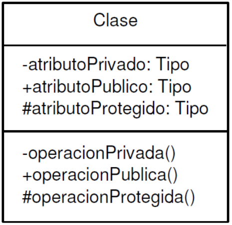
Atributos
Modificadores de acceso
Ejemplo de acceso a atributo privado:
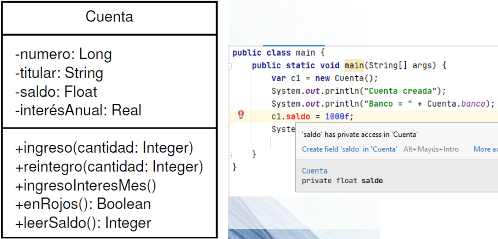
Atributos
Modificadores de acceso
public class Cuenta {
// Atributos privados
private long numero;
private String titular;
private float saldo;
// Métodos públicos
public void ingreso(float cantidad){ saldo += cantidad; }
public void reintegro(float cantidad){ saldo -= cantidad; }
public float leerSaldo(){ return saldo; }
public boolean enRojos(){ return (saldo < 0); }
}
Atributos
Modificadores de contenido
- static: Atributo de clase, no del objeto instanciado
- final: Define el atributo como constante
Atributos
Modificadores de contenido
public class Cuenta {
// Atributos
private long numero;
private String titular;
private float saldo;
private static String banco = "BBVA";
private static int contadorCuentas = 0;
...
}
Índice
- Introducción
- Fundamentos de la POO
- Estructura de una clase
- Atributos
- Métodos
- Encapsulación, control de acceso y visibilidad
- Constructores
- Empaquetado de clases
- Arrays estáticos de objetos
- Tipos enumerados
Métodos
Definen el comportamiento de un objeto.
Se declaran después de los atributos y constan de cabecera (modificadores, nombre, tipo de dato devuelto...) y cuerpo (sentencias del método que interactúan con los atributos).
Métodos
Cabecera
// Cabecera del método
public void ingreso(float cantidad){
// Cuerpo del Método
saldo += cantidad;
}
Métodos
Cabecera
[private | protected | public] [static] [abstract] [final] [native] [synchronized]
tipo nombreMétodo ( [lista_parametros] )
[throws lista_excepciones]
- Modificadores de acceso: private, protected, public
- Modificadores de contenido: final, static
- Otros modificadores: abstract, native, synchronized
Métodos
Cabecera
[private | protected | public] [static] [abstract] [final] [native] [synchronized]
tipo nombreMétodo ( [lista_parametros] )
[throws lista_excepciones]
- Tipo de dato devuelto (void si no devuelve nada)
- Nombre del método
- Lista de parámetros entre paréntesis
Métodos
Cabecera
[private | protected | public] [static] [abstract] [final] [native] [synchronized]
tipo nombreMétodo ( [lista_parametros] )
[throws lista_excepciones]
- Lista de excepciones (se tratará en temas posteriores)
Métodos
Cuerpo
El cuerpo del método está encerrado entre llaves.
Si devuelve un tipo de dato, obligatoriamente debe llevar una instrucción return.
public void ingreso(float cantidad, boolean urgente) {
// Si es urgente, se le aplica una comisión del 1%
if(urgente) saldo += (cantidad-(cantidad*0.01));
else saldo += cantidad;
}
public float leerSaldo() {
return saldo;
}
Métodos
Parámetros
- Se pueden incluir los que necesitemos separándolos por comas.
- Pueden ser de cualquier tipo.
- Dentro del método no se pueden declarar variables con el mismo nombre que los parámetros.
- Tampoco pueden haber 2 parámetros con el mismo nombre (en el mismo método).
- El parámetro sí se puede llamar igual que un atributo de la clase. En ese caso, se distinguen llamando al atributo this.atributo.
Métodos
Parámetros
public void ingreso(float cantidad, boolean urgente) {
// Si es urgente, se le aplica una comisión del 1%
if(urgente) saldo += (cantidad-(cantidad*0.01));
else saldo += cantidad;
}
public float leerSaldo() {
return saldo;
}
public void setSaldo(float saldo){
// this para diferenciar atributo y parámetro
this.saldo = saldo;
}
Métodos
Sobrecarga
- Java permite definir varios métodos con el mismo nombre pero diferentes parámetros.
- Esto se conoce como sobrecarga de métodos.
- El compilador distingue el método a utilizar por el número y tipo de parámetros.
- Muy utilizado en los constructores.
Métodos
Sobrecarga
public void ingreso(float cantidad) {
saldo += cantidad;
}
public void ingreso(double cantidad) {
saldo += (float) cantidad;
}
public void ingreso(float cantidad, boolean urgente) {
// Si es urgente, se le aplica una comisión del 1%
if(urgente) saldo += (cantidad-(cantidad*0.01));
else saldo += cantidad;
}
Métodos
this
- this hace referencia al objeto actual.
- Se puede utilizar para hacer referencia a atributos mediante this.atributo.
- Se usa principalmente para distinguir atributos y parámetros con el mismo nombre.
public void setSaldo(float saldo){
// this para diferenciar atributo y parámetro
this.saldo = saldo;
}
Métodos
toString
Redefiniendo el método toString que viene heredado de Object podemos personalizar cómo queremos que se muestre el objeto en un contexto donde se espere un tipo String.
public String toString(){
return "Cuenta: " + numero + " de " + titular + ". Saldo: " + saldo;
}
Métodos
toString
De esta forma, ya es posible hacer un sout directamente de un objeto sin obtener la típica referencia como "Cuenta@23fc625e".
System.out.println(cuenta1);
// Salida: Cuenta: 123456 de Juan. Saldo: 1000
Métodos
equals
Es útil redefinir el método equals que cualquier clase hereda de Object para determinar si dos objetos de la misma clase son iguales.
// equals recibe un Object del que habrá que hacer casting a la clase que se trate
public boolean equals(Object o) {
// Forma 1:
// Cuenta c = (Cuenta) o;
// return this.numero == c.numero;
// Forma 2 (mejor):
// Si es la misma referencia, directamente son iguales
if (this == o) return true;
// Se comprueba que el objeto sea instancia de Cuenta y se hace el casting en c
return (o instanceof Cuenta c) && this.numero == c.numero;
}
Métodos
equals
Pasa comparar objetos (igual que con las cadenas) se utiliza el método equals y no el operador == que sólo compara las referencias.
Cuenta c1 = new Cuenta();
Cuenta c2 = new Cuenta();
c1.setNumero(123456);
c2.setNumero(123456);
System.out.println(c1.equals(c2)); // Salida: true
System.out.println(c1 == c2); // Salida: false
Métodos
equals
Aparte del uso de equals de forma explícita como en el ejemplo anterior, es usado de forma implícita por otros métodos.
Como por ejemplo, en el método contains o indexOf para comprobar si un objeto existe o devolver su posición respectivamente en una colección (se estudiarán más adelante).
Índice
- Introducción
- Fundamentos de la POO
- Estructura de una clase
- Atributos
- Métodos
- Encapsulación, control de acceso y visibilidad
- Constructores
- Empaquetado de clases
- Arrays estáticos de objetos
- Tipos enumerados
Encapsulación y visibilidad
- Característica muy importante en POO.
- Consiste en no tener los atributos públicos (modificador de acceso "public").
- Para leer su valor se hará a través de métodos get.
- Para modificar su valor se hará a través de métodos set.
Encapsulación y visibilidad
IntelliJ crea automáticamente los setters y getters al comenzar a escribirlos o directamente desde el menú Code > Generate.
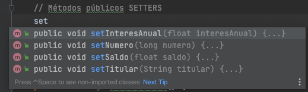
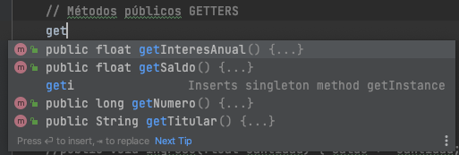
Encapsulación y visibilidad
Importante, tener bien creados los atributos
public class Cuenta {
// Atributos privados
private static String banco = "BBVA";
private long numero;
private String titular;
private float saldo;
private float interesAnual;
...
Encapsulación y visibilidad
// Métodos públicos SETTERS
public void setNumero(long numero){
this.numero = numero;
}
public void setTitular(String titular){
this.titular = titular;
}
public void setInteresAnual(float interesAnual){
this.interesAnual = interesAnual;
}
public void setSaldo(float saldo){
this.saldo = saldo;
}
Encapsulación y visibilidad
// Métodos públicos GETTERS
public static String getBanco() {
return banco;
}
public float getInteresAnual() {
return interesAnual;
}
public float getSaldo() {
return saldo;
}
public long getNumero() {
return numero;
}
public String getTitular() {
return titular;
}
Encapsulación y visibilidad
public class Main {
public static void main(String[] args){
Cuenta c1 = new Cuenta();
System.out.println("Cuenta creada");
System.out.println("Banco: " + Cuenta.getBanco());
c1.ingreso(100f, false);
c1.ingreso(100f, true);
System.out.println("Saldo: " + c1.getSaldo());
}
}
Encapsulación y visibilidad
- Hay métodos que sólo se utilizan dentro de la propia clase para operaciones internas.
- En esos casos es recomendable ocultarlos marcándolos como private o protected.
- Ejemplo: Método que calcula el dígito de control de la cuenta bancaria. Se utiliza internamente desde otros métodos al hacer ingresos/reintegros.
Índice
- Introducción
- Fundamentos de la POO
- Estructura de una clase
- Atributos
- Métodos
- Encapsulación, control de acceso y visibilidad
- Constructores
- Empaquetado de clases
- Arrays estáticos de objetos
- Tipos enumerados
Constructores
Métodos con el mismo nombre que su clase encargados de inicializar los atributos del objeto.
Constructores
- Al crear un objeto con el operador new hemos utilizado el constructor por defecto.
- A partir de ahora crearemos nuestros propios constructores.
- Los constructores aceptan sobrecarga y no devuelven ningún dato (return).
- Importante! Al crear cualquier constructor, el compilador de Java no generará el constructor por defecto y tendremos que crearlo también.
Constructores
Para crear constructores hay que indicar:
- El tipo de acceso (también pueden ser private)
- El nombre del constructor (igual que la clase)
- La lista de parámetros
- Si lanza excepciones
- El cuerpo del constructor
Constructores
// Constructor por defecto (hay que definirlo)
public Cuenta() {
numero = 0;
titular = "";
saldo = 0;
interesAnual = 1;
contadorCuentas++;
}
Constructores
// Constructor con datos básicos
public Cuenta(long numero, String titular, float interesAnual){
this.numero = numero;
this.titular = titular;
this.saldo = 0;
this.interesAnual = interesAnual;
contadorCuentas++;
}
Constructores
Constructor copia
- Son constructores a los que se les pasa un objeto de la misma clase y crean uno nuevo a partir de sus atributos.
- Útil para clonar objetos, ya que si hiciéramos obj1 = obj2 tendremos un único objeto con 2 referencias a los mismos datos.
Constructores
Constructor copia
¿Cuál es la salida del código?
Cuenta c1 = new Cuenta(123456789, "Eladio Blanco", 1.5f);
Cuenta c2 = new Cuenta();
System.out.println("Cuentas creadas");
System.out.printf("c1 --> Número: %d - Titular: %s - Interés: %.2f \n", c1.getNumero(), c1.getTitular(), c1.getInteresAnual());
System.out.printf("c2 --> Número: %d - Titular: %s - Interés: %.2f \n", c2.getNumero(), c2.getTitular(), c2.getInteresAnual());
c2 = c1;
c2.setNumero(987654321);
c2.setInteresAnual(5.2f);
System.out.println("Cuentas copiadas");
System.out.printf("c1 --> Número: %d - Titular: %s - Interés: %.2f \n", c1.getNumero(), c1.getTitular(), c1.getInteresAnual());
System.out.printf("c2 --> Número: %d - Titular: %s - Interés: %.2f \n", c2.getNumero(), c2.getTitular(), c2.getInteresAnual());
Constructores
Constructor copia
Salida:
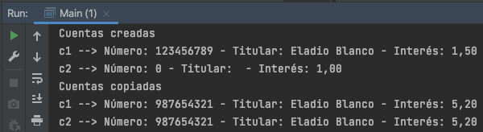
Constructores
Constructor copia
// Constructor copia
public Cuenta(Cuenta c){
this.interesAnual = c.getInteresAnual();
this.saldo = c.getSaldo();
this.titular = c.getTitular();
this.numero = c.getNumero();
contadorCuentas++;
}
Constructores
Constructor copia
¿Cuál es la salida del código?
Cuenta c1 = new Cuenta(123456789, "Eladio Blanco", 1.5f);
Cuenta c2 = new Cuenta(c1);
System.out.println("Cuentas creadas mediante el constructor copia");
System.out.printf("c1 --> Número: %d - Titular: %s - Interés: %.2f \n", c1.getNumero(), c1.getTitular(), c1.getInteresAnual());
System.out.printf("c2 --> Número: %d - Titular: %s - Interés: %.2f \n", c2.getNumero(), c2.getTitular(), c2.getInteresAnual());
c2.setNumero(987654321);
c2.setInteresAnual(5.2f);
System.out.println("Cuentas c2 modificada");
System.out.printf("c1 --> Número: %d - Titular: %s - Interés: %.2f \n", c1.getNumero(), c1.getTitular(), c1.getInteresAnual());
System.out.printf("c2 --> Número: %d - Titular: %s - Interés: %.2f \n", c2.getNumero(), c2.getTitular(), c2.getInteresAnual());
Constructores
Constructor copia
Salida:
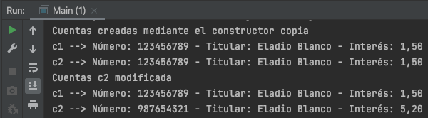
Constructores
Destrucción de objetos
- Cuando los objetos no son necesarios, hay que destruirlos para liberar memoria.
- El recolector de basura de Java los destruye automáticamente.
- Invoca a un método finalize que libera la memoria del objeto.
Constructores
Destrucción de objetos
Podemos declarar nuestro propio método finalize.
// Destructor finalize
public void finalize() throws IOException {
FileOutputStream fos = new FileOutputStream(numero + ".cnt");
ObjectOutputStream oos = new ObjectOutputStream((fos));
oos.writeObject(titular);
oos.writeFloat(saldo);
oos.writeFloat(interesAnual);
oos.close();
}
Constructores
Destrucción de objetos
- Problema: No sabemos cuándo se va a ejecutar exactamente.
- Recomendación: Implementar las "operaciones finales" en métodos a los que llamemos antes de terminar de trabajar con los objetos.
Constructores
Destrucción de objetos
En el ejemplo del Banco vamos a crear un método salvar() para guardar el estado de las cuentas.
// Salvar estado cuentas
public void salvar() throws IOException {
FileOutputStream fos = new FileOutputStream(numero + ".cnt");
ObjectOutputStream oos = new ObjectOutputStream((fos));
oos.writeObject(titular);
oos.writeFloat(saldo);
oos.writeFloat(interesAnual);
oos.close();
}
Constructores
// Guardar cuenta a disco
try {
c1.salvar();
}catch (Exception e){
System.out.println("Error al guardar la cuenta en disco");
}
// Recuperar cuenta de disco
try {
c1 = new Cuenta(123456789);
}catch (Exception e){
System.out.println("Error al recuperar la cuenta en disco");
}
Constructores
Completa la clase Cuenta y genera el Javadoc (menú Tools > Generate Javadoc...)
Ten en cuenta que banco y contadorCuentas son atributos estáticos, al igual que sus getters.
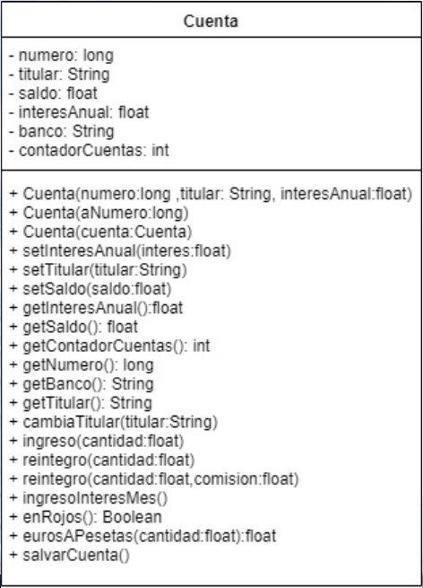
Índice
- Introducción
- Fundamentos de la POO
- Estructura de una clase
- Atributos
- Métodos
- Encapsulación, control de acceso y visibilidad
- Constructores
- Empaquetado de clases
- Arrays estáticos de objetos
- Tipos enumerados
Empaquetado de clases
- La encapsulación dentro de las clases nos permite realizar el proceso de ocultación.
- Cuando las aplicaciones crecen, es necesario utilizar un nivel superior de encapsulación y ocultación: el empaquetado.
- Un paquete es un conjunto de clases relacionadas entre sí y agrupadas bajo un mismo nombre.
- Los atributos y métodos protected son accesibles desde cualquier clase del paquete.
Empaquetado de clases
Jerarquía de paquetes
- Los paquetes se organizan jerárquicamente como el sistema de archivos.
- Clases: archivos.
- Paquete: carpeta que aloja otras clases o paquetes.
paquete_raiz.subpaquete1. ... .subpaquete_n.NombreClase
java.lang.String
java.util.Scanner
java.util.regex.Pattern
Empaquetado de clases
Uso de paquetes
- Cada vez que usemos una clase tendríamos que utilizar toda su trayectoria.
- La sentencia import simplifica su uso.
- Al inicio de nuestra código se realizan todos los imports que necesitemos.
import java.lang.String;
import java.util.Scanner;
import java.util.regex.Pattern;
// Importa todas las clases directas de util: Date, Calendar, Timer...
import java.util.*;
Empaquetado de clases
Incluir clase en paquete
- Al inicio del archivo .java se indica mediante package a qué paquete pertenece la clase.
- Si no se especifica, formará parte del paquete por omisión (paquete sin nombre asociado al proyecto).
package paqueteEjemplo;
class claseEjemplo {
...
}
Índice
- Introducción
- Fundamentos de la POO
- Estructura de una clase
- Atributos
- Métodos
- Encapsulación, control de acceso y visibilidad
- Constructores
- Empaquetado de clases
- Arrays estáticos de objetos
- Tipos enumerados
Arrays estáticos de objetos
- Un array también puede almacenar objetos, igual que hace con tipos primitivos.
- Va a permitir alojar grandes cantidades de objetos y recorrerlos para realizar operaciones CRUD.
- A día de hoy se utilizan otras estructuras que cambian su tamaño de forma dinámica, aunque su funcionamiento se basa en los arrays.
Arrays estáticos de objetos
Ejemplo de array de objetos: App Banco
String espera;
Scanner s = new Scanner(System.in);
// Crear array de 5 clientes. Ahora mismo todos a null
Cliente[] clientes = new Cliente[5];
Cliente cliente1, cliente2, cliente3, cliente4, cliente5;
cliente1 = new Cliente("Antonio", "Medina", "74589636Z", "635241589", "antonio@fernando3martos.com");
cliente2 = new Cliente("José", "López", "58963612Z", "625789589", "jose@fernando3martos.com");
cliente3 = new Cliente("María", "González", "56589600Z", "614789632", "maria@fernando3martos.com");
cliente4 = new Cliente("Lucía", "Torres", "52589677Z", "666321123", "lucia@fernando3martos.com");
// Se asignan al array
clientes[0] = cliente1; // Asignación directa. ¿Mejor con constructor copia?
clientes[1] = cliente2; // ¿Qué ocurre si modificamos cliente2 después de asignarlo?
clientes[2] = cliente3;
clientes[3] = cliente4;
System.out.println("Datos de nuestros clientes:");
for(Cliente c : clientes){
if(c != null){ // ¿Qué ocurre si no comprobamos null?
System.out.println("---------------------------------");
System.out.println("Nombre: " + c.getNombre());
System.out.println("Apellidos: " + c.getApellidos());
System.out.println("DNI: " + c.getDni());
System.out.println("Móvil: " + c.getNumMovil());
System.out.println("Email: " + c.getEmail());
System.out.println("---------------------------------");
System.out.println("Pulsa enter para continuar");
espera = s.nextLine();
// ¿Y si implementamos el toString en Cliente para simplificar esto?
}
}
Arrays estáticos de objetos
Ejercicio: App Colección discos (ejercicio 3 de la relación 3)
Índice
- Introducción
- Fundamentos de la POO
- Estructura de una clase
- Atributos
- Métodos
- Encapsulación, control de acceso y visibilidad
- Constructores
- Empaquetado de clases
- Arrays estáticos de objetos
- Tipos enumerados
Tipos enumerados
Los tipos enumerados (enum) en Java son una característica que permite definir un conjunto fijo de constantes con nombres significativos. Se utilizan cuando un valor puede tomar uno de un conjunto limitado de posibilidades, mejorando la legibilidad y seguridad del código.
Un enum es una clase especial en Java que hereda implícitamente de java.lang.Enum y no puede heredar de otras clases.
Tipos enumerados
Definición
Se define usando la palabra clave enum, seguida del nombre y los valores constantes:
public enum DiaSemana {
LUNES, MARTES, MIERCOLES, JUEVES, VIERNES, SABADO, DOMINGO;
}
Cada uno de estos valores es una instancia de DiaSemana.
Tipos enumerados
Uso básico
Los enum pueden usarse de manera similar a los tipos primitivos:
public class TestDiaSemana {
public static void main(String[] args) {
DiaSemana dia = DiaSemana.LUNES;
System.out.println("Hoy es " + dia);
}
}
Tipos enumerados
Uso en un switch
DiaSemana dia = DiaSemana.MIERCOLES;
switch (dia) {
case LUNES:
System.out.println("Inicio de la semana");
break;
case VIERNES:
System.out.println("Fin de la semana laboral");
break;
case SABADO:
case DOMINGO:
System.out.println("Fin de semana");
break;
default:
System.out.println("Día normal");
}
Tipos enumerados
Uso en una clase
public class Persona {
private String nombre;
private DiaSemana diaLibre;
public Persona(String nombre, DiaSemana diaLibre) {
this.nombre = nombre;
this.diaLibre = diaLibre;
}
public void mostrarInfo() {
System.out.println(nombre + " tiene el " + diaLibre + " libre.");
}
}
public class TestPersona {
public static void main(String[] args) {
Persona p = new Persona("Juan", DiaSemana.DOMINGO);
p.mostrarInfo();
}
}
Tipos enumerados
Métodos útiles
- values(): devuelve un array con todas las constantes de la enumeración.
- valueOf(String): Devuelve la constante de la enumeración que corresponde al string pasado por argumento.
- ordinal(): Devuelve la posición en la que se ha definido (entero).
// Obtener todos los valores
for (DiaSemana d : DiaSemana.values()) {
System.out.println(d);
}
// Obtener un enum a partir de una cadena
DiaSemana dia = DiaSemana.valueOf("VIERNES");
System.out.println("El día seleccionado es: " + dia);
// Obtener el ordional del valor
int posicion = dia.ordinal(); // 4
Tipos enumerados
Métodos y Propiedades en un Enum
Los enumerados pueden contener atributos y métodos. Por ejemplo:
public enum Nivel {
BAJO(100), MEDIO(2000), ALTO(5000), EXPERTO(10000);
private int horas; // 100, 2000, 5000 o 10000
// Se podrían añadir más atributos
// Constructor
Nivel(int horas){ this.horas = horas; }
public int getHoras() { return horas; }
}
Uso:
public class TestNivel {
public static void main(String[] args) {
Nivel nivelJava = Nivel.MEDIO;
System.out.println("Nivel: " + nivelJava + " con más de " + n.getHoras() + " horas.");
}
}
Tipos enumerados
Ejercicio: Mes
Crea un enum Mes para representar los 12 meses del año. Cada uno, además tendrá un valor que será los días del propio mes (sin tener en cuenta años bisiestos).
Tipos enumerados
Ejercicio: Mes (continuación)
Prueba el enum en una clase TestMes haciendo lo siguiente:
- Mostrar todos los valores del enum junto a sus días (usando values()).
- Dado un mes, mediante un switch informar a qué trimestre pertenece, o si es vacaciones.
- Pedir al usuario una fecha, extraer el mes en formato cadena y mediante valueOf() asignar el valor al tipo enumerado.
Tipos enumerados
Conclusión
Los tipo de datos enumerados en Java y en cualquier otro lenguaje son una herramienta poderosa para definir valores constantes con significado. Mejoran la legibilidad del código, evitan errores y pueden incluir atributos y métodos para hacerlos más flexibles.
Úsalos siempre que puedas, es una buena práctica de programación.
Repasar
Tips de la presentación
¿Imprimir en PDF?
- Clic aquí
- CTRL/CMD + P
- Guardar como PDF
Navegar por las diapositivas
- Pulsa ESC
- Clic a la que quieras ir